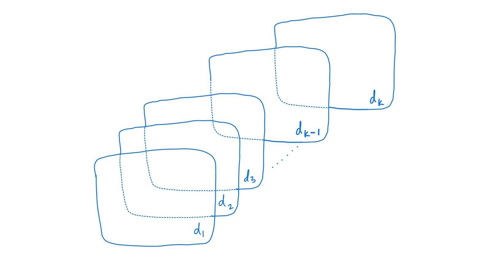

flowchart LR A[X] --> B[Y]
DATA 202 - Week 4
Probability Theory
Part I: Context
More on theory construction
Last week, we considered one cyclical process of theory construction.

This week, we return to this idea of theory construction but with more detail.
Research inquiry
Hypotheses
Analysis
Evaluation
Revision
Research inquiry
– Transfer your reading and informal observations into pratical problems
Hypotheses
– Utilize the research literature to understand your research problem
– Extend this research literature by developing your own research questions
– Based on your research question(s), develop a hypothesis (or a set of hypotheses)
Analysis
– Outline your empirical study in specific details to conduct your analysis
– Conduct your analysis and consider the limitations of your methods
Evaluation
– Evaluate your analytic findings alongside your hypotheses
Revision
– Utilize the reseaerch literature to revise or confirm your hypotheses
Limitations
Across research methodologies, a limitation is any feature of a study that may cause concerns. Limitations vary in both their scope and context. As a result, it is important to consider both the obvious limitations and hidden concerns.
- Some examples of limitations in statistics
- Lack of reliable data
- Limited sample size
- Deficiencies in measurements of data- Not limitations but “bad” statistical practices
- Theory does not depict the entire story or phenomenon
- Old data (and research citations)
- Broad conclusions with no supporting data
- Analyzing data for significant results. P-hacking!Developing a logic model
Logic is an important component in theory construction. Logical reasoning is the use of critical thinking in the applications of statistics, and relates to our forthcoming focus on probability. However, logic in relation to theory is based on a set of ideas that help build sound and consistent arguments that can be analyzed, measured, and support model construction and development.
A few key considerations:
Premises and conclusions
– Clear statements are used; statements are focused and direct
Internal structure
– There is consistency in your premises and any conclusions
– There are no contradictions in your structure
Arguments and inferences
– Your argument follow your initial premises, internal structure, and conclusions
Path diagrams
One way to visualize the relationships between your variables is in a path diagram.
Path diagrams are used in path analysis, a subset of statistical methods that help researchers discern and assess the relationship(s) between multiple variables.
Path analysis is based on a closed system of nested relationships.
– These nested relationships must have a logical internal structure.
Together, a path diagram can represent a series of structured linear regression equations.
Path models are often used in economics and political science.
As we move further into our analyses, we will learn more about path analysis.
This is a simple two-variable path diagram
Exercise
Identify two variables for a simple path diagram.
\(X\) (independent variable) and \(Y\) (dependent variable)
What is the logical relationship between the variables?
– Write a logical statement.
What is the question that structures the relationship between the variables?
– Turn your logic statement into a question.
What is your theory on how the two variables relate to one another?
– Write a theoretical statement based on the research literature.
What is your hypothesis?
– Develop an educated guess based on the research literature.
Three variable path diagram
flowchart LR A[Variable 1] --> B[Y] C[Variable 2] --> B
A path diagram made of multiple variables
flowchart LR A[Variable 1] --> B[Y] C[Variable 2] --> B D[Variable 3] --> B
Part II: Content
Our main goal for content this week will be to better frame and understand the relationship between mathematics and statistics through the lens of probability theory. These concepts are closely related but differ in both their forms and functions.
Understand the role of mathematics in modern statistics
Distinguish between algebra and statistics
Identify basic mathematical terms useful for statistical analysis
Objective 1: Frame the role of probability in statistics
Probability theory forms the backbone of statistical inference and modeling.
Key Concepts
Probability Space: A probability space is a mathematical construct that contains the results of a random process, generally known as an experiment. The probability space consists of:
Sample space (\(\Omega\)): The set of all possible outcomes
Event space (\(F\)): A collection of subsets of \(\Omega\) containing the various events, \(E\)
Probability measure (\(P\)): A function assigning probabilities to events
Classic example: Tossing a fair coin
\(\Omega = \{Heads, Tails\}\)
\(F\) = {∅, {Heads}, {Tails}, {Heads, Tails}}
\(P({Heads}) = P({Tails}) = 0.5\), \(P(∅) = 0\), \(P({Heads, Tails}) = 1\)
*Random Variables**: Random variables (RVs) are functions mapping the sample space to real numbers. We generally study:
Discrete random variables: Take on countable values
Continuous random variables: Take on uncountable values
Probability mass function (PMF): \(P(X = x)\) for discrete RVs
Probability density function (PDF): \(f(x)\) for continuous RVs
Cumulative distribution function (CDF): \(F(x) = P(X \leq x)\)
Expectation and Moments
Expected value: \(E[X] = ∑xP(X=x)\) or \(∫xf(x) dx\)
Variance: Var(X) = \(E[(X - E[X])^2]\)
Standard deviation: \(\sigma = \sqrt{Var(X)}\)
Higher-order moments: \(E[X^n]\)
Moment generating function: \(M_X(t) = E[e^(tX)]\)
Classic example: Standard normal distribution \(N(0, 1)\) i.e., where \(0\) is the mean, \(\mu\), and \(1\) is the variance, \(\sigma^2\).
\(E[X] = 0\)
\(Var(X) = 1\)
Recall, the Standard normal distribution:
It’s symmetric around the mean of 0; it’s bell-shaped curve has a peak at x = 0.
~68% of the data falls within one standard deviation of the mean (between -1 and 1).
~95% of the data falls within two standard deviations of the mean (between -2 and 2).
~99.7% of the data falls within three standard deviations of the mean (between -3 and 3).
Objective 3: Distinguish between algebra and statistics
At its core, statistics is a branch of applied mathematics.
Statistics developed from various abstract concepts in mathematics
– Many of these concepts were applications of probability theory, which is more abstract.
We refer to statistics as an applied mathematical tool.
We refer to algebra as a pure mathematical tool.
The differences between pure and applied mathematics can be described in many ways.
– However, applied mathematics most often relates to applications in the real world and pure mathematics focuses on abstraction.
The table below presents one example on the difference in how mathematics is used in algebra versus statistics.
We use our knowledge of algebra to build our understanding of statistics.
| In algebra | In statistics |
|---|---|
| \(y=mx + b\) | \(y_i=a+bx_i+\epsilon_i\) |
Generally, in the algebra equations, we model “exactness.” In statistical models, we produce estimates.
Objective 4: Identify basic mathematical terms useful for statistical analysis
Today we will consider three terms:
Scientific notation
Subscripts
Summation notation
Scientific notation.
Calculators have a limited number of spaces to report values.
In your calculator, you may have noticed a value containing a capital E
- Some examples are 2.35E4 or 2.35E-4.
This is scientific notation.
The method is instructing you to move the decimal point a certain number of spaces:
– To the right: 2.35E4 is really 2.35 x \(10^{4}\), or 23,500
– To the left: 2.35E-4 is really 2.35 x \(10^{-4}\), or 0.000235
Subscripts.
We use an “\(i\)” to refer to a subscript and to index the position of a value in our data set.
\(x_i\) refers to the i-th entry of a data set, \(X\).
If there are multiple variables (columns) in our data set, say a first variable \(X\) and a second variable is \(Y\), we say that \(x_i\) refers to the i-th entry for variable \(X\) and \(y_i\) refers to the i-th entry of variable \(Y\).
– To do so, we can make use the set of numbers (such as the whole numbers \(\mathbb{Z}^+\) or the positive integers \(\mathbb{Z}^{+}\)) that we reviewed in class.
– If a data set \(X\) contains three values such that \(X = \{9, 5, 12\}\), these values can be denoted using subscripts as: \(x_1 = 9\), \(x_2= 5\), \(x_3 = 12\).
Indexing elements of a data set
In the table below, we can see how subscripts are used to denote the elements of a data set.
| \(X\) | \(Y\) |
|---|---|
| \(x_1\) | \(y_1\) |
| \(x_2\) | \(y_2\) |
| \(x_3\) | \(y_3\) |
| . | . |
| . | . |
| . | . |
| \(x_n\) | \(y_n\) |
Summation notation.
In mathematics, the Greek letter \(\Sigma\) (Sigma) is reserved for summation (addition)
- We may need to sum values or numbers in a data set.
– For example, the notation: \[\sum_{i=1}^{n} x_i \] is used to indicate that we need to add up all of the values (up to \(n\)) for our variable \(X\).
If we have a total of five rows in our data set, such that \(n=5\) (here \(n \in \mathbb{N}\)), then we write:
\[\sum_{i=1}^{5} x_i = x_1 + x_2 + x_3 + x_4 + x_5\]
If we wanted to square our values before adding them up, we would write: \[\sum_{i=1}^{n} (x_i)^2 \] This would result in the following expansion if we let \(n=5\) with \(n \in \mathbb{N}\),\[\sum_{i=1}^{5} (x_i)^2 = (x_1)^2 + (x_2)^2 + (x_3)^2 + (x_4)^2 + (x_5)^2\]
Rows and columns
Rows. A row in a data set is generally used to refer to individual observations.
Columns. A column in a data set is generally used to refer to individual variables.
Databases
Last week, we created a small data set called a data frame. This week, we’ll briefly introduce databases for later.
Databases are collections of data sets or multiple data frames.
For example, a set of state records can be stored by year, or the same information can be restructured into a set of sets defined by state. In either case, we will define the elements of a database as a set of k sets where each set is a data set. As before, we index items in a set using a lower case \(i\) and start with 1 such that \(i = 1, 2, 3, ...,k-1, k\) (note the use of \(k\) instead of \(n\)).
Again, take note that we change the index from an \(n\) to \(k\); we do this to avoid confusion.

In the first example, we can consider a “small” example to help us answer the question. Take only the first few data sets of the database. For example, assume we start collecting data in the current year (year 1) and do so for the following two years:
Let \(d_1\) correspond to this year, \(d_2\) correspond to next year, and \(d_3\) correspond to the year after.
Note, however, when we rush to subtract the index on the last data set, \(d_3\) from the first data set \(d_1\), we end up with a value of 2. However, we see that there are, in fact, a total of three (3) data sets in the database: this year’s data set, next year’s data set, and the year after next year’s data set. This is due to the method we use to index a database.
Part III: Code
This week, we will prepare for Lab 1.
Task 0.1: Check your working directory
In your console, type in the following code to ensure you are in the desired directory:
getwd()If you are not in the desired directory, you can change your directory using the associated path. This path should be the same as the project folder that you plan to work out of for our course.
For example, stats/lab1
# insert your desired path in the parenthesis and remove the #
# setwd("/your/working/directory/goes/here") You can also add a sub-folder manually or under the Files tab in the RStudio IDE.
Task 0.2: Start a new RMarkdown
Once you have confirmed that you are in the correct directory, start a new RMarkdown file.
Task 1: Open a RMarkdown file
Prior to conducting any analyses in R, we want to include a brief summary of our work so that we (and others who read our code) know what we are prioritizing. This is an important step to documenting our research. We will write this preamble at the very top of our RMarkdown file.
A preamble is simply an introduction to your code. The structure of a preamble can vary widely. In an RMarkdown file, we can use hashtags (#) to write certain sections in our preamble. The # symbol informs R that it should ignore that line in our code.
---
title: "Lab No. #"
author:
- name: "Insert Your Name"
affiliation: "DATA 202, Fall 2024, Howard University"
date: "2024-08-15"
always_allow_html: true
output:
html_document:
toc: true
toc_depth: 2
number_sections: true
self_contained: yes
mode: selfcontained
pdf_document:
toc: true
toc_depth: 2
number_sections: true
geometry: margin=1.0in
---Let’s head over to Lab 1 to continue.